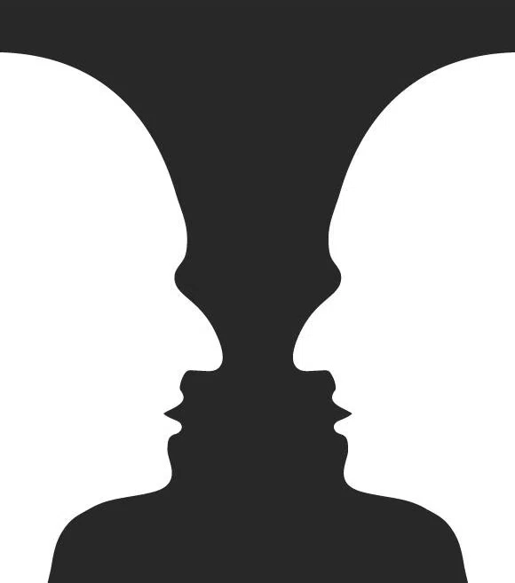

結論
5.1 同じ操作、異なる態度
本レポートは、二人のワタナベエイジの操作が共通の構造として記述できることを示した。
分類体系から対象を切り抜いて、解放する。
治さんは科学という問いの体系から錯視を切り抜き、司さんは図鑑という命名体系から蝶を切り抜く。方法と対象は異なるが、操作の構造は同一である。この共通構造は事後的に発見されたものであり、両者は互いの活動を参照して制作していたわけではない。
しかし、共通の構造は異質の態度として実装されている。治さんはPop Art構想によって錯視に新しいカテゴリを与え、揺らぎを瞬間的に解消する。司さんは蝶にカテゴリを与えず、約40年にわたって揺らぎを維持し続ける。共通の構造が、正反対の態度として表現されている。
操作のレベルでは共通しており、態度のレベルでは異質である。この構造の共通性と態度の異質性の共存が、本レポートの中心的な発見にあたる。
この共存が可能なのは、操作と態度が論理的に独立しているからである。切り抜き操作は揺らぎを創出するが、揺らぎをどう扱うかまでは規定しない。態度は操作の後に選択される。そして、一回性のパラドックス——低頻度概念が越境接続を形成する傾向——は表層的な現象に過ぎない。接続は最初からあった。揺らぎは、その接続を見えるようにする窓である。
では、構造の共通性と態度の異質性の共存は何を意味しているのか。
治さんと司さんが全く異なる操作を行っていたならば、両者を並置する理由がない。「同じことをしている」という認識があるからこそ、「しかし態度は異なる」という発見に意味が生じる。治さんの態度を通して司さんの態度が見え、逆もまた然りである。両者が揃うことで、「切り抜き」という操作が持つ可能性の幅——確定と不確定、宣言と沈黙、瞬間と持続——が見えてくる。
W Eiji展は、この共存の具体的な表現である。科学者と芸術家、言語化と実践、大衆性と思索性——これらの対が、共通の構造を基盤として一つの空間に並置された。
両者の間には補完関係がある。治さんは操作を「XをXじゃなくす」として言語化したが、物理的には実践していない。司さんは操作を約40年にわたって実践し続けたが、言語化はしていない。また、治さんはカテゴリを与えて驚きを生み、司さんはカテゴリを与えず問いを開く。言語化と実践、与えることと与えないことが互いを補っている。
鑑賞者が治さんの作品から入れば、驚きが図として浮かび上がり、問いは地に沈む。司さんから入れば、問いが図として前景に立ち、驚きは地へ退く。ルビンの壺のように、一方を図として見つめれば、他方は地として消える。

しかし消えたものは失われたのではない。切り抜かれた輪郭の裏側で、静かに待っている。どちらの経路をたどっても、鑑賞者が触れているのは同一の輪郭——「分類体系から切り抜いて解放する」という操作——である。
両者が揃うことで、鑑賞者は「切り抜きの美学」を両側から見ることができる。一方だけでは、この美学の輪郭は浮かび上がらない。邂逅によって、その輪郭は照らされる。
5.2 残された問い
5.2.1 分析という行為のメタ構造
本分析自体が「切り抜き」を行っている。ノートから概念を抽出しグラフ化する操作は、「分類体系から対象を切り抜いて解放する」という構造と同型である。
治さんが錯視を科学から切り抜き、司さんが蝶を図鑑から切り抜き、分析者が概念をノートから切り抜く——三者は異なる領域で、同型の操作を行っている。もしそうだとすれば、「切り抜き」は芸術的操作であると同時に、思考そのものに内在する構造かもしれない。治さんと司さんの芸術は、認知の深層構造を可視化する装置として捉え直すことができる。この方向への展開は、「切り抜きの美学」を認知の美学へと拡張するための課題として残される。
5.2.2 態度の選択と二項対立の限界
第四章で、操作と態度が論理的に独立していることを示した。しかし、なぜ治さんはカテゴリを与え、司さんは与えなかったのか。この選択の根拠は未解明のままである。
考えられる要因として、領域の特性（科学は答えを得て次へ進む傾向、芸術は不確定さを維持しうる）、個人史（治さんの「皆が楽しめる」という志向、司さんの40年の蓄積）、時代精神（Pop Artの文脈、コンセプチュアル・アートの文脈）などが挙げられる。しかし、これらは推測の域を出ない。
さらに、本分析で用いた「カテゴリを与える／与えない」という二項対立自体にも検討の余地がある。この区別は連続的なスペクトルの近似であり、実際には両者の間に無数の中間状態がありうる。
考えられる方向として：
- 状態の重ね合わせ：カテゴリを与えている状態と与えていない状態が同時に存在する様態の記述
- 時間的変化：最初はカテゴリを与えなかったが徐々に固定される、あるいはその逆といった動態の分析
- カテゴリ付与の強度：同じ「与える」でも、ウォーホールの断定的宣言と治さんの構想的志向は同質か
このような精密化によって、「なぜ異なる態度が選択されるのか」という問いも、より鋭く立て直されるだろう。
5.2.3 「切り抜き」の普遍性と理論的射程
本分析で発見された「構造の共通性と態度の異質性の共存」は、二人のワタナベエイジに固有のものか、より普遍的な構造か。
思想史・芸術史との接続
フッサールとハイデガー、ピカソとブラック、ボーアとアインシュタイン——思想史や芸術史における「対話的関係」は、構造の共通性と態度の異質性の共存として記述できるかもしれない。同じ問いに向き合いながら、異なる答えを出す。同じ操作を行いながら、異なる態度をとる。
第三章で検討した頻度と越境の関係は表層の現象であり、接続の本質は共通の構造にある。しかし、第四章で導入した「揺らぎの架け橋」——揺らぎは接続を生み出すのではなく、接続を見えるようにする——という視点は、他の分野にも適用可能かもしれない。科学史におけるパラダイムとアノマリー、哲学史における体系と裂け目、芸術史における様式と逸脱。もしそうだとすれば、「同一の構造、異なる態度」という関係性は、創造的な出会いが生まれる条件なのかもしれない。
美学理論との接続
本分析で抽出した「切り抜き」の構造——分類体系から対象を切断し、解放する——は、20世紀以降の美学理論における議論と接続しうる可能性がある。
たとえば、ダントーの「アートワールド」論やディッキーの「制度理論」は、芸術作品の成立条件を文脈間の移行として捉えた。「切り抜き」という操作は、これらの議論とどのような関係にあるのか。また、第四章で導入した「揺らぎ」という概念は、デリダの「差延」やドゥルーズの「強度」、あるいは東洋美学における「余白」「間」といった概念と比較検討されうるかもしれない。
これらの理論的接続の精査は本分析の射程を超えるが、「切り抜きの美学」を既存の美学的議論の中に位置づけるための重要な課題として残される。
分析日:2025年1月28日 データソース:渡辺英治手書きノート(25冊)、学術論文(2編)、W Eiji統合思考グラフ
付録A:用語定義
| 用語 | 定義 |
|---|---|
| 切り抜きの操作 | 分類体系から対象を切り抜いて、解放する操作 |
| 揺らぎ | 固定されていない、他の文脈で再解釈可能な状態 |
| 揺らぎの架け橋 | 揺らぎは接続を生み出すのではなく、接続を見えるようにする窓であるという原理 |
| 一回性のパラドックス | 高頻度概念が領域内に留まり、低頻度概念が越境接続する現象。表層的な現象であり、接続の本質は共通の構造にある |
| 構造の共通性 | 操作のレベルで両者が同一の構造として記述できること |
| 態度の異質性 | 態度のレベルで両者が正反対の志向を持つこと |
| 操作と態度の独立性 | 操作が態度を規定しないこと。切り抜きは揺らぎを創出するが、揺らぎをどう扱うかまでは規定しない |
付録B:外部調査出典
- 大府市公式サイト「Morning Monsters / W Eiji」展プロフィール(2025)
- OutermostNAGOYA「渡辺英司個展 merman」レビュー 井上昇治(2020)
- 越後妻有トリエンナーレ2009 作品解説「蝶のトレース」
- あいちトリエンナーレ2010 アーティスト情報
- 美術手帖ウェブ版「瞬き」展紹介記事(2017年3月6日)
- 六甲ミーツ・アート2012 アーティスト紹介
付録C:ガボールパッチの棄却——変数構造の示唆
C.1 ノートの記述
治さんのノートには、四つの「じゃなくす」の直後に、次の記述がある。
「ガボールは無限なので×、数学にはのらない」
ガボールパッチ（Gabor patch）とは、正弦波格子にガウス関数を掛け合わせた視覚刺激であり、視覚神経科学において広く用いられる基本的な刺激パターンにあたる。
C.2 変数構造の示唆
この棄却が重要なのは、候補を選別する行為自体が、変数構造の存在を示唆するからである。
「ここに何を代入できるか」を検討するためには、「ここ」——すなわち変数の枠——が既に思考の中になければならない。四つの具体例だけであれば、列挙として読むことも可能である。しかし五番目の候補を検討し、基準（無限性）に基づいて棄却したという事実は、治さんが「〇〇を〇〇じゃなくす」というパターンを変数構造として把握していたことをうかがわせる。
あとがき
展覧会では、治さんと司さんの作品は別々の部屋に置かれていた。私は司さんの部屋から入った。
司さんの作品は、初めて見るものだった。樽の中の無数の飛行機は、空に浮いて泳ぐ感覚を引き起こした。畳の上に置かれた魚やカエルの切り抜きは、水の中に潜るような感覚を生んだ。対象そのものに圧倒されるというよりも、自分のイメージをどんどん広げていく感覚があった。
部屋は狭く、歩き回る余裕はなかった。立ち止まって切り抜きの空間を目に焼き付け、目を閉じる。すると、その空間の中を泳ぐような感覚が生まれた。空や水辺、森の色、匂いにまでイメージが広がっていく。境界なく、自分自身がイメージの中に溶け込んでいく。実際のものに触れるというより、イメージの内側で遊んでいた。
扉を開けて治さんの部屋に入ると、モードが切り替わった。どこでもドアのように、別の世界に出た。
治さんとは同じ職場なので、研究テーマは知っている。初めて見る錯視部屋、円盤、錯視の映像、おもちゃ、質問コーナーなど——どれも楽しく遊んだ。
錯視を見ながら、どうやったら動かないように見えるのかを考えた。角度を変え、頭を上げ下げし、斜めからのぞき、メガネを外し、片目で見る。見え方が変わりそうな実験を片っ端から試した。不思議だとは思うが、驚きや不信感はない。脳とはこういうものだ、とそのまま受け入れていた。
ただ、科学者の展示という気配が、微かに漂っていた。
その後、もう一度司さんの部屋に戻った。理由はわからないが、最初とは違って見えた。
鑑賞中、共通性や差異を分析的に考えることはなかった。ただ、作品が並び形成する空間を、感覚で受け取っていた。「かすかな違和」——それが直感だった。
今にして思えば、この違和感は企画者たちも抱えていたのかもしれない。
科学者と芸術家を一つの展覧会に並置する。しかし、両者を同じ言葉で語る枠組みは、おそらく存在しなかった。治さんを語るには予測符号化理論や視覚神経科学の言葉が必要になり、司さんを語るには現代美術批評の言葉が必要になる。二つの語彙は交わらない。
「並置するが、混ぜない」——別々の部屋という配置は、この困難に対する一つの判断だったのではないか。接続があると直観しながら、それを言葉にできないまま、物理的な近接によって示す。
私が感じた違和は、その未解決の問いを感覚的に受け取ったものだったのかもしれない。
分析は、結果としてその問いに一つの言葉を与えることになった。
「科学（問いの体系）から錯視を切り抜いて、解放する」——この記述は、予測符号化理論を知らなくても成立する。そして、司さんの「図鑑（命名体系）から蝶を切り抜いて、解放する」と並列になる。両者は「同じ操作を行いながら異なる態度をとる二人」として、対称的に語れるようになる。
展覧会が身体で提示していたものを、分析は言葉で記述した。企画者が配置によって示唆していた接続を、「切り抜き」という構造として取り出した。
体験は感覚で受け取り、分析は言葉で記述する。どちらも同じ対象に向かっている。体験だけでは構造は見えない。分析だけでは質感は失われる。両者が揃うことで、邂逅の輪郭が浮かび上がる。